Wi-Fi · quatro tarefas interativas
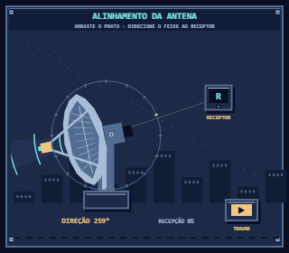
Alinhamento da antena · inicial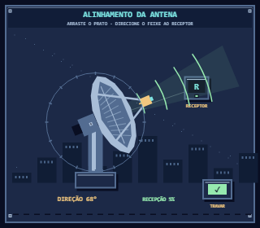
Alinhamento da antena · em operação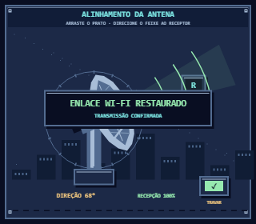
Alinhamento da antena · concluído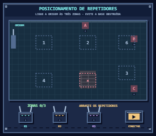
Posicionamento de repetidores · inicial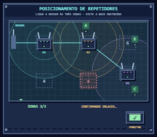
Posicionamento de repetidores · em operação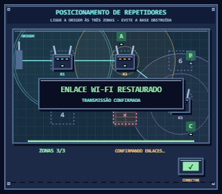
Posicionamento de repetidores · concluído Posicionamento de repetidores · inicial
Posicionamento de repetidores · inicial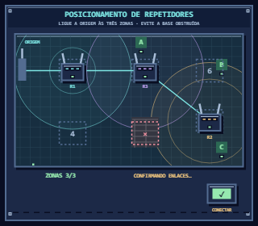
Posicionamento de repetidores · em operação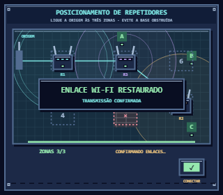
Posicionamento de repetidores · concluído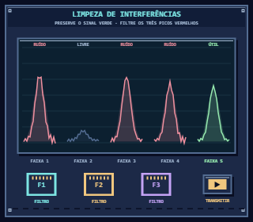
Limpeza de interferências · inicial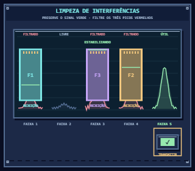
Limpeza de interferências · em operação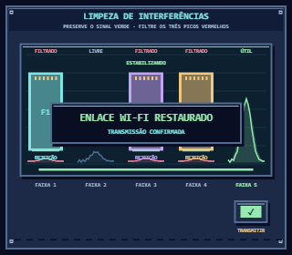
Limpeza de interferências · concluído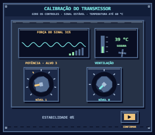
Calibração do transmissor · inicial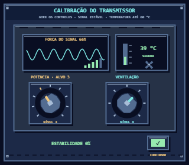
Calibração do transmissor · em operação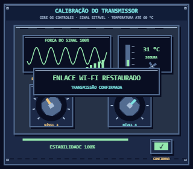
Calibração do transmissor · concluído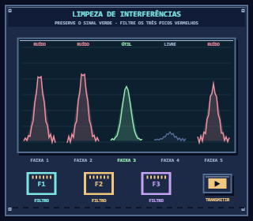
Limpeza de interferências · inicial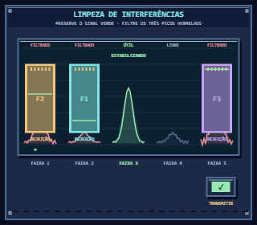
Limpeza de interferências · em operação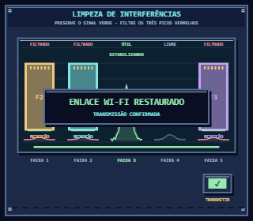
Limpeza de interferências · concluído